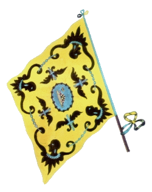

CAPITANI VITTORIOSI:
2 Andrea Corsini
2 Daniele Dainelli
1 Luigi Doveri
1 Giovanni Grassellini
1 Angelo Niccolai
1 Silvestro Venturini
1 Antonio Silvestri
1 Giuseppe Baldini
1 Gaetano Vivi
1 Girolamo Pignotti
1 Assunto Grassellini
1 Luigi Porciani
1 Edoardo Inglesi
1 Augusto Mazzini
1 Celestino Guerrieri


- IN GRASSETTO QUANDO VINSE